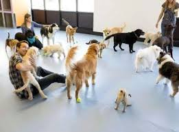
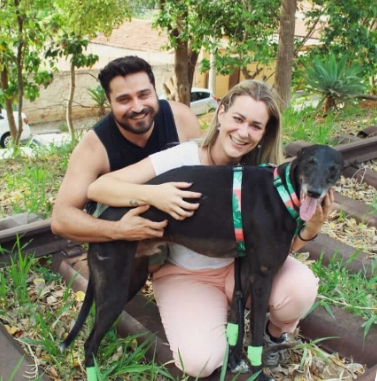

Sobre mim
Cíntia Silva
Diz o ditado “O cão é o melhor amigo do homem”. Sim, é verdade! Um amigo que não fala, mas sabe expressar o seu amor. Um amigo que não te julga e nem te critica, um amigo que não olha se você é rico ou pobre, se mora em mansão ou nas ruas; pra eles se tiver comida e água tá bom demais... um amigo leal... um amigo que dá amor e carinho, e precisa de amor e carinho também. Ame o seu amigo, entenda o seu amigo, seja amigo do seu melhor amigo.
Objetivo

Idéia pra Cachorro
Cães. Porque seres tão puros sofrem tanto? Falta de um lar, de comida, de uma família, de amor. Tanta gente que reclama da vida, mas tem uma cama pra dormir, alguma coisa pra comer. Cães. Seres que não olham para o que você tem, e sim para sua alma. Mendigo ou milionário, ele te tratará do mesmo jeito. E ainda são maltratados! Só me pergunto porque. Por estar latindo pedindo comida? Já pensou que esse latido pode ser um “eu te amo”? E você manda ele ficar quieto né? Reflita antes de levantar um dedo contra um ser tão bom e verdadeiro, um dos poucos que restam assim nesse mundo.
História de adoção

Talita e Plínio
Olá, sou a Talita. O Plínio foi adotado há mais ou menos um ano e meio. Estávamos em uma feira de adoção, ele passou pela gente. Os olhinhos dele ficaram em nossa cabeça e resolvemos adotar! Ele entrou em nossa vida em um momento muito especial, a gente tinha acabado de voltar de outro país. A gente queria um cachorro grande mas não sabíamos como nossos outros cachorros iriam reagir com ele, o receio também era ele não se adaptar com a gente. A gente não conhecia a raça, nunca tivemos um cachorro desse porte mas resolvemos adotar! Hoje o Plínio é nosso filho, traz muita alegria para a gente, faz muita bagunça mas é a alegria da nossa casa! Santa Bárbara d'Oeste - SP